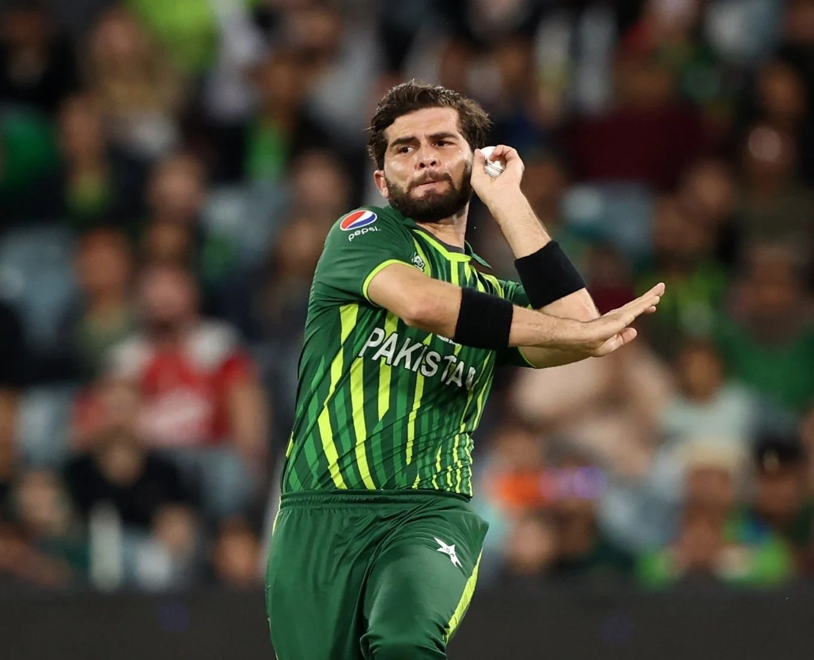

Shaheen Shah Afridi
Currently the main bowler of Pakistan Cricket Team

Shaheen Shah Afrdi in 2022 T20 World Cup
Here's the timeline of Shaheen Shah Afridi's Life and Career
- 2000 - Born in Landi Kotal, Khyber Pakhtunkhawa, Pakistan
- 2017 - Represented Pakistan in U-19 World Cup
- 2018 - Made his debut for Pakistan against WestIndies
- 2018 - Made his Odi debut for Pakistan against Afghanistan in the Asia Cup
- 2018 - Made his Test Debut for Pakistan against New Zealand
- 2019 - Played a crucial role in Pakistan's World Cup Compaign, took 16 wickets in 5 matches
- 2019 - Became the youngest bowler to take a 5-wicket haul in World Cup history
- 2021 - He took 3 main wickets of India and played important role for the important victory of Pakistan against India
- 2021 - ICC Men's Cricketer of the year
- 2022 - Became the fastest Pakistani bowler to take 50 wickets in ODIs
- 2022 - Became the captain of Lahore Qalandars and they won the title first time in psl history
- 2023 - He married the Daughter of famour cricker of the Pakistan (Shaid Afridi)
- 2023 - Lahore Qalandars won consecutive 2nd title under his capataincy
Shaheen Afridi is known for his fierce bowling, ability to swing the ball both ways, and his consistent performance. He has quickly risen through the ranks to become one of Pakistan's premier fast bowlers. With his exceptional skills and dedication, Shaheen continues to inspire cricket enthusiasts worldwide